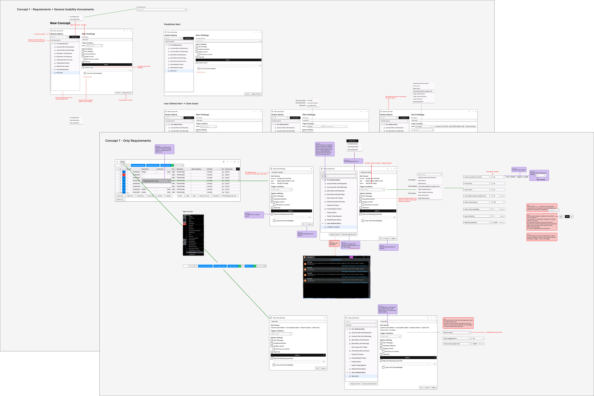

Only 13% of traders were using the alerts system. The ask was to add single-order alerts with the ability to trigger on order-level thresholds. The real problem was fragmentation: alerting was scattered across the platform in ways a new feature alone couldn't fix.
Overview
Brief pushback. A narrow brief, a misframed problem. The brief: alert on a single order. The reality: users needed alerts on multiple orders, and couldn't discover functionality that already existed.
Fidessa's alerting functionality serves front office traders across the platform: sales traders, high-touch traders, and low-touch traders. I was tasked to extend alerting from filter grids to individual orders.
User interviews killed the original scope. Single-order alerts wouldn't address the actual pain points: users needed alerts on multiple orders to match their fast-paced work style, and a single alerting hub to fix the discoverability problem caused by functionality scattered across tools.
I led the project end-to-end as the sole designer, conducting knowledge transfer sessions, design iterations, and in-depth user interviews across all major personas. The project produced two design rounds: an additive release scoped to a client contract deadline, and a comprehensive redesign consolidating all alerting into a single hub. When the prospective clients didn't sign and the timeline constraint lifted, the full redesign is what shipped.
Project Timeline
Knowledge transfer: SME sessions, functionality mapping
User interviews: baseline data across all front office personas
Design round 1: single & multiple order alerts
Validation round 1: single & multiple order alerts
Design round 2: alerting hub
Validation round 2: alerting hub
The Problem
The brief was too narrow. The real problem was structural.
Current state
Alerts were set on filtered grids. Filtering was limited to order states (assigned person, outlier state, status), not performance thresholds. Only 13% of users were actively using alerting.
Original ask
Allow users to create alerts at the single-order level with the ability to trigger on order-level thresholds (fill percentage, price level, order volume done).
Understanding the Domain
Every persona. Every workflow stage. The domain research had to cover both depth and breadth.
Knowledge transfer sessions with SMEs produced a functionality map covering all alerting behavior and current state across the platform. In-depth user interviews across all three persona types followed, with research synthesis identifying shared needs, persona-specific needs, and gaps.
Key finding: many users weren't aware of the full range of alerting capabilities that already existed. The problem wasn't only missing functionality: the existing functionality was too fragmented to discover and configure reliably.

Research Findings
Low adoption wasn't disinterest. It was a system that didn't fit how traders work.
Actual problem
The original scope was narrow enough to ship, but it wasn't addressing why so few users engaged with alerts in the first place. User interviews across all three persona types surfaced a consistent pattern: traders weren't avoiding alerts by choice. The trigger conditions were limited to order state changes, which didn't map to how traders actually monitor their work. The deeper issue was twofold: the one-order-at-a-time model couldn't keep up with the volume of orders traders monitor, and alerting functionality was spread across tools with no single place to manage it, leaving most users unaware of what the platform already offered, including timing and macro triggers (time-based and market movement) that already existed but couldn't be found.
Why it matters: for front office traders, a well-configured alert replaces manual monitoring. State-based alerts tell you what already happened. Traders need signals earlier. Fill rate and volume done tell them whether to rework a strategy before an order reaches a problem state. The 13% active usage rate was the evidence.
Sales Trader
Client-facing. Needs fill progress alerts on client orders tied to execution windows.
High-Touch Trader
Manages individual orders with direct client involvement. Alert on individual order metadata.
Low-Touch Trader
High volume, algorithmic execution. Needs apply-to-all and market movement triggers, not fill progress alerts.
Redefining the Scope
Additive improvements don't fix fragmentation.
The original brief came with a commercial deadline: prospective clients in a new region required single-order alerts before they would sign. That constrained the first design round to an additive release. Research made clear it would only solve half the problem: users were asking for alerting functionality that already existed, and adding more types to a fragmented system wouldn't fix discoverability. The full redesign followed. When the prospective clients didn't sign and the timeline pressure lifted, that's what shipped.
Original ask
Add single-order alerts with threshold triggers within the existing architecture.
Rescoped to
One unified alert hub: all alert types, all trigger types, consolidated.
Design Decisions
Constraints shaped the first version. Evidence shaped the second.
Ideation
The original scope was shaped by development feasibility before any design work had started. Wireframing early was necessary, not to explore visual direction, but to give PMs and developers something concrete to react to. It reframed the conversation from "what can we build" to "what should we build and is it feasible."

Decision 1
Single-order alerts wouldn't solve the problem
Knowledge transfer sessions established the mismatch early: front office traders monitor too many orders simultaneously for alerting on single-order level to be useful. The development deadline narrowed the options. Multi-order alerting was the only change that could address the actual workflow constraint within the timeline.
Validation 1
Still not enough
- Single-order alerting —
- Multi-order alerting —
- Order metadata triggers —
Decision 2
Consolidate fragmented alerting and add macro-level triggers
The first prototype made concessions to development feasibility and timeline. The expectation was that the improvements would still move the needle. Validation proved otherwise: users confirmed the added functionality helped, but the core problems (discoverability and limited trigger types) weren't fixed. That feedback made the case for a wider scope: a unified hub consolidating all alert types and macro-level triggers. When the prospective client contract fell through and the timeline pressure lifted, development proceeded with the full redesign.
Validation 2
The demand was there
- Single-order alerting —
- Multi-order alerting —
- Macro-level alerting —
- Order metadata triggers —
- Macro triggers —


Final Validation
Round 1 answered the timeline. Round 2 answered the users.
Round 1 interviews
confirmed the approach was going the right direction, but wasn't enough
Round 2 interviews
said they would actively use the new alert functionality
The baseline was 13% active usage. That number reflects a ceiling imposed by a broken system, not a ceiling on demand. The validation data confirmed the demand was there.
Outcome
The full redesign shipped.
Additive version
Delivered within the existing architecture and timeline scope.
- — Single-order alerting
- — Multi-order alerting
- — Order metadata triggers
Full redesign
One unified alert configuration hub consolidating all alert types and all front office personas.
- — Single-order alerting
- — Multi-order alerting
- — Macro-level alerting
- — Order metadata triggers
- — Macro triggers
The additive release was designed to meet a client contract deadline. When the prospective clients didn't sign, the timeline pressure lifted and the full redesign is what went to production. Front office traders are known for slow adoption of new tooling. The 34× result reflects what happens when the system shipped is the one that actually matches how they work.
Within 12 months
increase in alerts created across the platform
Expected KPI
projected increase in alerts created, set by head of product
Reflection
A hunch without evidence doesn't win the argument.
Reflection 1
Instinct without evidence isn't enough to push back
Before design round 1, there was an inkling the scope was too narrow. Senior colleagues advised holding off. Without the research to back it, there wasn't standing to push further. Once user interviews gave something concrete, the scope changed. But that came a round later than it could have. Instinct tells you where to look. Evidence is what lets you push.
Reflection 2
Domain research time is design time
Month 1 was entirely knowledge transfer. On a fast-moving project that can feel like lost time. Here it was the opposite. Understanding the full alert landscape across the platform was what made it possible to identify fragmentation as a possible root problem, not just missing features.